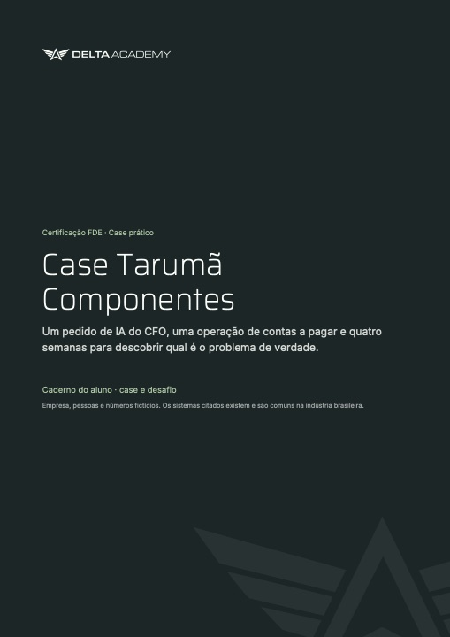
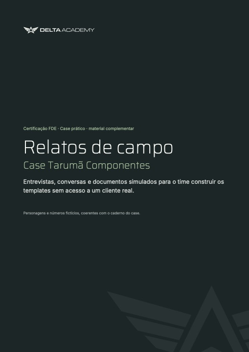
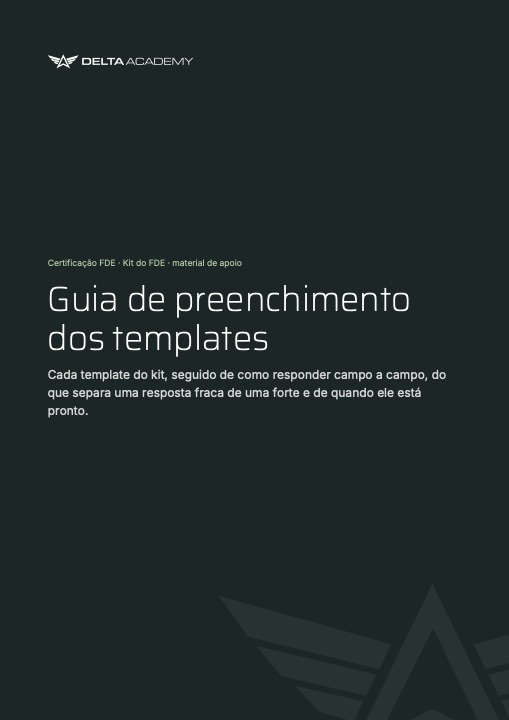
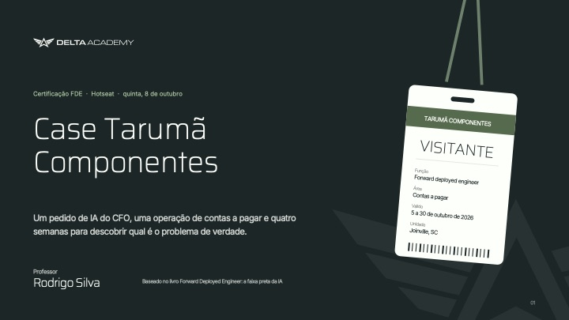

PDFAbrir ↗Certificação FDEO papel do FDE e a imersão operacionalHotseat · quinta, 8 de outubro
Case Tarumã Componentes
Um pedido de IA do CFO, uma operação de contas a pagar e quatro semanas para descobrir qual é o problema de verdade.
O case
O CFO pediu um agente de IA. O trabalho é descobrir do que a Tarumã precisa.
Estamparia de Joinville, 1.400 funcionários, R$ 680 mi de faturamento. Um financeiro único atende duas fábricas. O pedido chegou por e-mail em 22 de setembro. O FDE começa no dia 5.
R$ 90.100
por mês em multas, juros e descontos de 2% não aproveitados.
4.200
notas fiscais por mês. 610 pagas em atraso.
R$ 180 mil
todo o orçamento do piloto, incluindo o trabalho do FDE.
15/01
reunião do conselho. O CFO quer chegar com resultado.
“A gente não dá conta.”
“A Marlene tem tudo isso na cabeça. Eu preciso escrever.”
Por onde começar
Três passos, nesta ordem.
Leia o caderno inteiro antes de abrir qualquer template. As pessoas dizem coisas diferentes e alguns números contradizem o que elas acreditam. Isso é proposital.
Leia o caderno do aluno
Do começo ao fim. A história da Tarumã, os anexos, o glossário e as doze tarefas do desafio.
Ir para o caderno →Simule o campo com os relatos
Doze entrevistas, conversas e e-mails. Quando um relato contradiz o caderno, vale o número medido. A contradição vira achado.
Ir para os relatos →Preencha o kit com o guia ao lado
Uma planilha e seis arquivos Word. O guia mostra campo a campo o que separa uma resposta fraca de uma forte.
Ver o kit do FDE →
Arquivos do case
Material do trio.
Abra no navegador ou baixe. Marque o que já leu: o progresso fica salvo neste navegador.

PDFAbrir ↗
PDFAbrir ↗- xlsxPlanilhas 01, 02 e 08
- 03Roteiro de entrevista de campo
- 04Contrato de sucesso
- 05Relatório semanal ao sponsor
- 06Memo de decisão
- 07Pedido de mudança de escopo
- 09Checklist de handover
Apoio · templates
Kit do FDE
Uma planilha e seis arquivos Word. É onde as respostas do trio são escritas.
ZIP7 arquivos360 KB

PDFAbrir ↗Nenhum arquivo encontrado.
Kit do FDE
Doze paradas em quatro etapas.
Cada parada usa o que a anterior produziu. O caderno diz, para cada tarefa, o que preencher, onde está a informação e quando está pronta.
Etapa 1 · EntenderO que acontece de verdade na operação?
- 1.1Mapa de stakeholdersPlanilha · aba 01
- 1.2Folha de shadowingPlanilha · aba 02
- 1.3Roteiros de entrevistaWord 03
- 1.4Sintoma ou causaFolha livre
Etapa 2 · EscolherQual problema atacar e o que prometer?
- 2.1Régua de candidaturaPlanilha
- 2.2Conta de valorPlanilha
- 2.3Contrato de sucessoWord 04
Etapa 3 · DecidirComo reagir ao que acontece no caminho?
- 3.1Memo de decisãoWord 06
- 3.2Mudança de escopoWord 07
- 3.3Relatório ao sponsorWord 05
Etapa 4 · SairComo o piloto vive sem você?
- 4.1RunbookPlanilha · aba 08
- 4.2Checklist de handoverWord 09
Use as setas do teclado para trocar de etapa.
Baixar kit do FDE (.zip) 360 KB
Entrega final
Cinco minutos para convencer o CFO.
Comece pela decisão que você pede, com prazo. Prove cada slide com um anexo. Termine repetindo o pedido numa frase.
1
Um arquivo por trio
Trio.zip com o nome dos três: a planilha do kit, os documentos Word e a apresentação final. Prazo e canal de envio informados pelo professor.
9
Slides para o CFO
Parte 1 conta a história, do pedido inicial às decisões. Parte 2 traz os doze templates como anexos.
5 + 3
Minutos com a banca
Cinco de apresentação e três de perguntas, com a banca no papel do CFO.
Resolução do case
Gabaritos e exemplo de apresentação final.
Os dois arquivos trazem as respostas. Ficam guardados até a correção: liberar antes tira do trio a parte mais importante do trabalho. A senha é informada pelo professor ao final.
29páginas
Bloqueado
Caderno completo com gabaritos
Case, desafio e respostas de referência por tarefa, com armadilhas e perguntas da banca.
PDF · 153 KB
27páginas
Bloqueado
Exemplo de apresentação final
Uma resposta de referência completa: nove slides para o CFO e os doze anexos.
PDF · 142 KB